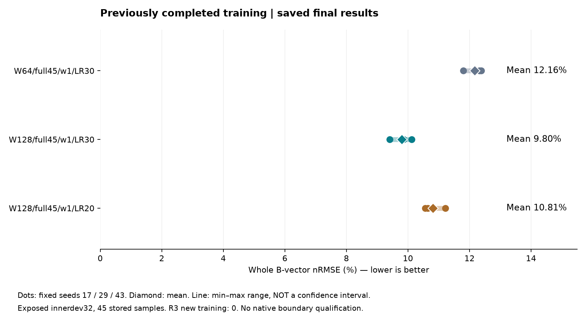

MotorAI · R3 · 2026년 10월 31일 · 원천검증과 후속 학습
완료된 본학습과
새 연결 실험의 보류 사유
새 주기·공극 연결 실험: HOLD_NOT_RUN
기존 본학습은 완료됐습니다. 현재 기준은 W128 / full45 / w1 / LR30입니다. 이번 R3에서는 실제 해석에 적용된 경계조건과 좌표계·경계쌍의 원천 근거를 확인하지 못해 새 학습을 시작하지 않았습니다. 성능 실패 판정은 아닙니다.
완료된 학습 결과
전체 Bx/By를 함께 평가한 면적가중 B-vector nRMSE입니다. 낮을수록 좋습니다. 고정 시드 17·29·43은 초기화와 데이터 순서를 재현하고, 우연한 실행 차이를 살피기 위한 세 번의 독립 학습 설정입니다.
| 모델 | 평균(%) | 최소(%) | 최대(%) | 저장된 판정 |
|---|
| W64/full45/w1/LR30 | 12.16 | 11.80 | 12.38 | 기준모델 |
| W128/full45/w1/LR30 | 9.80 | 9.41 | 10.12 | IMPROVEMENT_CLAIM_WITHIN_INNERDEV |
| W128/full45/w1/LR20 | 10.81 | 10.56 | 11.22 | NO_IMPROVEMENT_CLAIM |

폭 64→128 비교는 내부 검증집단에서 개선 기준을 통과했습니다. LR20 후속은 기준 LR30보다 악화되어 채택하지 않았습니다. 이번 표는 완료 결과의 재표현이며 재학습·재평가가 아닙니다.
노출 이력이 있는 innerdev32의 저장된 45개 해석 표본입니다. 독립 시험이 아니며, 최소–최대 범위는 신뢰구간이 아닙니다. 45표본은 실제 360도 주기의 입증이 아닙니다.
왜 원천 검증이 필요한가
FEM 자계 대리모델은 메시의 형상·재료·해석 조건을 입력받아 요소별 Bx/By를 예측합니다. 그래프 연결을 따라 인접 요소의 정보를 전달하므로, 확인된 영역에서 반복 FEM 예측 비용을 줄일 가능성이 있습니다. 주기 경계나 회전자–고정자 사이에 연결을 추가하려면 어느 요소가 대응하는지, 벡터를 어떤 좌표계로 옮기는지, 부호를 어떻게 적용하는지가 먼저 확정돼야 합니다.
원본 case와 학습 case의 파일·기하 계보 일부는 확인했지만, 그것만으로 경계의 물리적 의미가 확정되지는 않습니다. CPU 합성시험·좌표 일치·저장 컨투어 재생도 이 근거를 대신하지 않습니다.
이번에 확인한 범위
- 현재 설치 버전과 7개 API 파일의 제한된 문맥을 확보했습니다. 현재 설치 버전은 과거 해석의 생성 버전 증거가 아닙니다.
- 공식 설치 도움말의 대칭·공극 메시·FEA 표시·편집·출력표·CSV 내보내기, 총 6개 주제를 정확한 파일 단위로 읽었습니다.
- 문서는 계산에 사용한 대칭 계수·이유의 출력 위치와 일반 CSV 내보내기 기능을 설명합니다. 그러나 적용 BC·부호·B 기저·native 경계쌍의 정적 조회 명세는 확보되지 않았습니다.
- 원본 DOE 조건 JSON은 이미 두 저장 기록에 동일하게 회수돼 있어 중복 원격 조회하지 않았습니다. 해당 기록에는 필요한 경계 정보가 없습니다.
- Phase B의 RuntimeException 실패는 보존했습니다. 별도 미독 7개 파일의 성공으로 이전 실패를 지우지 않았습니다.
판정과 다음에 필요한 근거
| 항목 | 현재 상태 |
|---|
| 실제 생성 버전·모델 family·적용 BC / sign / frame / native pair | UNKNOWN |
| case40 same-lab-angle no-wrap P0 전체45 검사 | 기존 coverage FAIL 보존 |
| TRAIN328 / dev32 전체45 물리·연결 admission | 미확립 |
| 새 R3 학습 / 추론 / FEA | 모두 0 |
필요한 것은 실제 저장 해석에 결합된 경계 종류·부호·sector 변환·B 성분 기저·회전자/고정자 좌표계·native 경계 ID 대응과, 이를 해석할 생성 버전별 공식 명세입니다. 이어 전체 학습·검증 범위의 모든 위상에 적용 가능한지 확인해야 합니다.
현재 확인된 정적 경로에는 바로 실행할 새 자료 위치나 조회 명세가 없습니다. 공급사에 지원 경로가 없다는 뜻은 아닙니다. 새로운 정확한 명세나 case-bound 기록의 위치가 확보되면, 이미 승인된 범위와 동일한 검증 기준으로 재검토할 수 있습니다. 추정 부호·최근접 채움·실패 표본 삭제로 학습을 통과시키지 않습니다.
일정·보존·검증 범위
사용자가 변경한 계산 종료는 11월 1일 17시 KST, 보고 마감은 18시 KST입니다. 새 수치계산 시작부터 최대 8시간 규칙을 유지하며 아직 계산 시계는 시작되지 않았습니다. 이번 보류는 이전 마감이나 시간 부족에 따른 판정이 아닙니다.
새 모델 결과가 없어 R3 후보 컨투어·학습곡선은 없습니다. 이전 결과·실패·UNKNOWN과 원자료는 보존합니다. 과거 컨투어 감시 실패와 회수 출력의 프로세스 계보 UNKNOWN도 변경하지 않습니다.
그림은 저장 수치로 만든 PNG를 별도로 시각 확인하며 HTML 내부 링크·숫자·파일 해시를 검사합니다. 브라우저 시각 검증: UNVERIFIED_SECURITY_POLICY_BLOCK. 다른 방법으로 정책 차단을 우회하지 않았습니다.
공개 요약·근거 해시 · 파일 manifest · 검증 범위 · 재현 안내
이전 W128 본학습 보고 · 완료 LR20 후속 보고